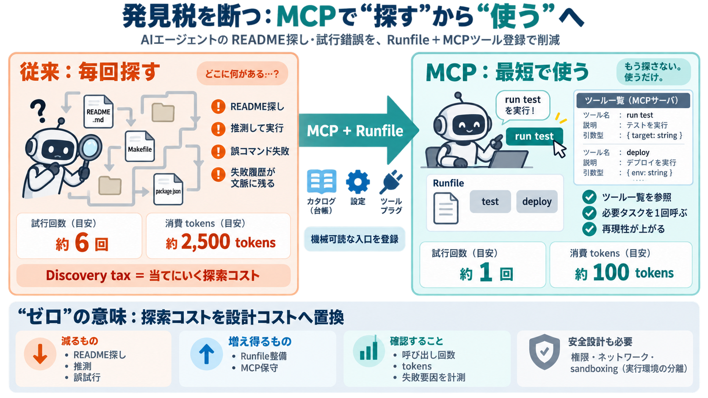

MCP Adoption Statistics 2026: Model Context Protocol
MCP is not just a registry of tools. The latest specification defines a host/client/server model over JSON-RPC. Servers …

MCP is not just a registry of tools. The latest specification defines a host/client/server model over JSON-RPC. Servers …
My initial reaction was to build McPick, a CLI tool for toggling MCP servers on and off. The idea was simple, before sta…
Publish your MCP server to the Registry🔌 API Documentation View the complete REST API specification💻 Registry CLI Use …
| July 28, 2026 | MCP 2026-07-28 specification released — stateless core, auth hardening, extensions framework | | Septe…
Treating MCP servers as trusted. Every MCP server should be treated as potentially untrusted. Implement allowlists, vali…